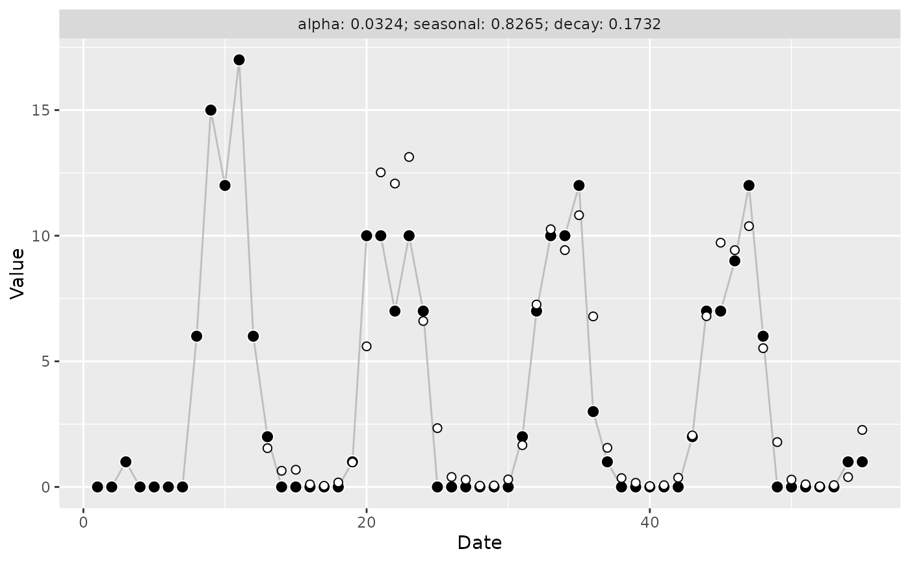
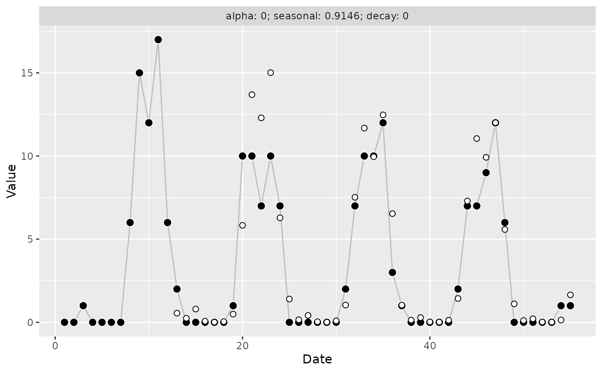

Returns a threedx model applied to time series y after learning the
optimal set of parameters by minimizing a provided loss function. Use
predict.threedx() to generate a forecast based on the fitted model.
Usage
learn_weights(
y,
period_length,
alphas_grid,
loss_function,
penalize = FALSE,
loss_increase = 1
)Arguments
- y
The time series to be forecasted as numeric vector (not as
ts()object)- period_length
The presumed length of
y's seasonal period; for example,12Lfor monthly observations,7Lfor daily observations, ...- alphas_grid
A data frame of possible parameter combinations to generate the weights of the final model. The optimal parameter set will be chosen based on the minimization of
loss_function. The expected columns are numeric and calledalpha,alpha_seasonal,alpha_seasonal_decay. At least one row must be provided. All values must be between 0 and 1. Use, for example,list_sampled_alphas()orlist_edge_alphas()to generate this data frame, or generate it in any way you like.- loss_function
A function with first argument
y_hatand optionally more arguments. Usually, to compute a loss, at least an additionalyargument is required to compute errors. Must be able to handle additional parameters via...to allow for potential future changes in the set of arguments passed toloss_functionbylearn_weights(). For examples, seeloss_mae()orloss_mae_with_observation_weight(). It can be assumed that the argumentsy_hatandypassed bylearn_weights()are numeric vectors of equal length. The providedloss_functionmust return a numeric scalar value.- penalize
Logical,
FALSEby default. IfTRUE, will try to pick a set of parameters that are simpler while not increasing the loss too much. The allowed increase in loss in percentage points is defined via theloss_increase. A model is simpler if more of its parameters are equal to exactly zero or one, as these correspond to the edge cases.- loss_increase
A non-negative scalar value by which the loss may be increased compared to the best possible loss, in percentage points. This argument is ignored unless
penalize = TRUE. The default of1corresponds to a range of up to a 1 percentage point increase in loss.
Value
A fitted model object of class threedx, which is a list of:
A numeric vector
weightsof the same length as the inputy, assigning a weight to each index of the past observations. The weights sum to 1. These weights are the fitted weights used to produce forecasts.A numeric scalar
alpha, the optimal paramater for the exponential smoothing component chosen during model trainingA numeric scalar
alpha_seasonal, the optimal paramater for the seasonal exponential smoothing component chosen during model trainingA numeric scalar
alpha_seasonal_decay, the optimal paramater for the seasonal exponential decay smoothing component chosen during model trainingA numeric vector
fittedcontaining fitted values for each index ofy; the up toperiod_length-first observations may be missing.A numeric vector
residualscontaining the residuals for the training data as computed byy - fitted, thus the up toperiod_length-first observations may be missing.A numeric vector
y, the inputyA scalar
n, the number of observations provided viayA scalar
period_length, the inputperiod_lengthA function
loss_function, the providedloss_functionA scalar
loss, the value computed by the providedloss_functionbased on the inputyand the fitted values (ignoring the initial missing values) for the loss minimizing set of parameters reported inalpha,alpha_seasonal,alpha_seasonal_decayA logical
penalize, identical to the provided function argumentA scalar
loss_increase, identical to the provided function argumentA list
fullcontaining intermediate results observed during model optimization for all other parameter combinations provided viaalphas_grid
Examples
set.seed(9284)
y <- stats::rpois(n = 55, lambda = pmax(0.1, 1 + 10 * sinpi((5 + 1:55 )/ 6)))
alphas_grid <- list_sampled_alphas(
n_target = 1000L,
include_edge_cases = TRUE
)
model <- learn_weights(
y = y,
alphas_grid = alphas_grid,
period_length = 12L,
loss_function = loss_mae
)
if (require("ggplot2")) {
autoplot(model)
}
#> Loading required package: ggplot2

model_penalized <- learn_weights(
y = y,
alphas_grid = alphas_grid,
period_length = 12L,
loss_function = loss_mae,
penalize = TRUE,
loss_increase = 10
)
model$full$best_alphas
#> alpha alpha_seasonal alpha_seasonal_decay
#> 1 0.03240655 0.8265107 0.173151
model_penalized$full$best_alphas
#> alpha alpha_seasonal alpha_seasonal_decay
#> 1 0 0.9146342 0
if (require("ggplot2")) {
autoplot(model_penalized)
}
